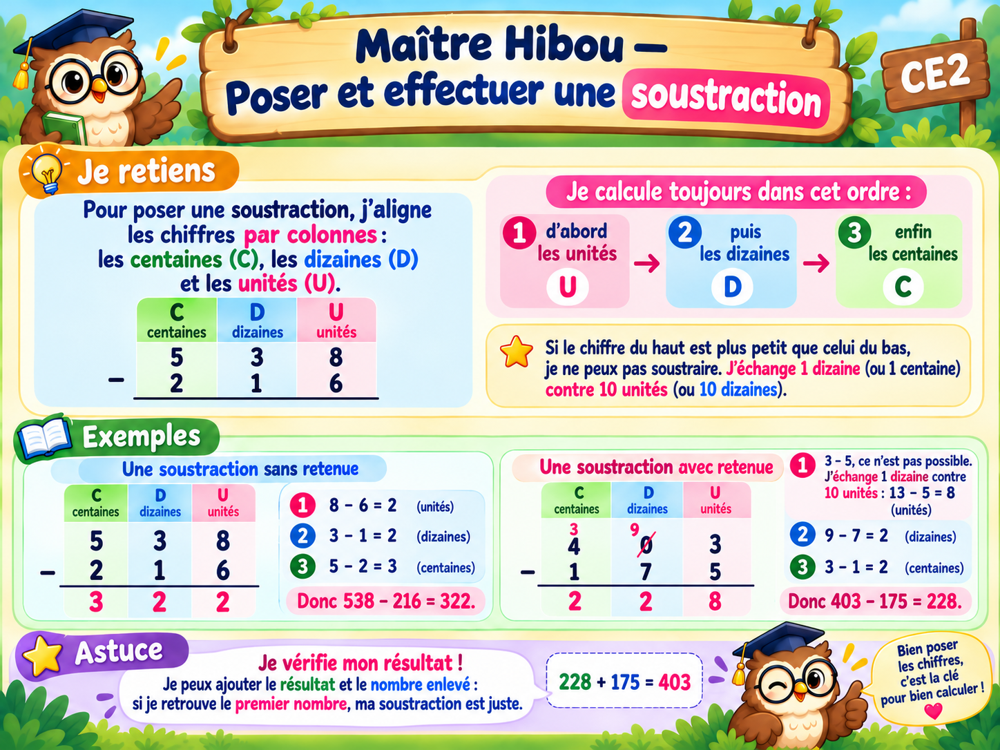

À toi de jouer !
10 exercices progressifs. Écris ta réponse et clique sur « Vérifier ». Tu passes au suivant après une bonne réponse.
Bravo ! Tu as terminé les 10 exercices.
Tu peux maintenant valider cette leçon.

10 exercices progressifs. Écris ta réponse et clique sur « Vérifier ». Tu passes au suivant après une bonne réponse.
Tu peux maintenant valider cette leçon.